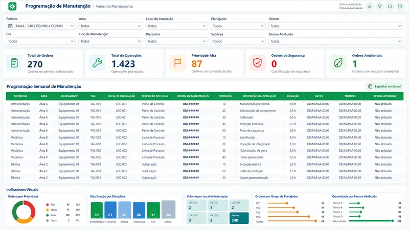

Planilhas paralelas por equipe
Cada área mantém seu próprio controle e a consolidação vira trabalho manual.
Estruturamos o Azure DevOps como ALM e construímos dashboards Power BI sobre os dados reais do seu processo — com rastreabilidade de ponta a ponta.
Atendemos times de TI e PMO, operações industriais e projetos de educação orientados por dados.

Quando processo e dado vivem separados, a gestão vira uma sequência de controles manuais e discussões sobre qual número é o certo.
Cada área mantém seu próprio controle e a consolidação vira trabalho manual.
Métricas sem origem rastreável geram mais debate do que decisão.
É difícil responder o que foi entregue, testado, aprovado e com qual evidência.
A equipe gasta energia preparando informação em vez de agir sobre ela.
Resolvemos isso conectando processo e dado.
Você pode contratar cada frente separadamente. O maior ganho aparece quando o ALM gera os dados e o Power BI transforma esses dados em decisão.
Visão executiva e operacional sobre os dados reais do processo.
Um Azure DevOps que representa o processo de trabalho — e não só um quadro de tarefas.
O trabalho deixa de terminar no board. Estruturamos a origem, a camada analítica e o modelo de dados para transformar o fluxo do ALM em indicadores claros para engenharia, PMO e diretoria.
Os cases mostram como transformamos processo e dado em uma experiência de gestão. As telas foram anonimizadas e não expõem clientes, pessoas ou informações confidenciais.
Da avaliação individual à visão gerencial da evolução do aluno
Transformação de diferentes indicadores educacionais em uma experiência visual única para acompanhar evolução, estágio de desenvolvimento e contexto da turma.
Desafio: consolidar hipótese de escrita, reconhecimento numérico, evolução por trimestre e comparação com a turma.
Solução: dashboard analítico com visão longitudinal, indicadores individuais e coletivos, observações do professor e filtros por aluno e período.
Resultado: uma visão única para identificar evolução individual, estágio atual, comparação com a turma e pontos de atenção.
O dashboard evidencia de onde o aluno partiu, onde está e como sua evolução se compara ao grupo.
Evolução individual → estágio atual → comparação com a turma → pontos de atenção
Transformando dados do SAP em um cockpit operacional de manutenção
Centralização de ordens, operações, equipes, prioridades, locais de instalação e centros de trabalho para apoiar planejamento e acompanhamento semanal.
Desafio: responder rapidamente sobre volume, prioridades, concentração, alocação, operações sem responsável e distribuição da manutenção.
Solução: cockpit operacional com filtros, KPIs e detalhamento até ordem e operação.
Resultado: maior visibilidade sobre carga de trabalho, prioridades, programação, responsáveis e exceções operacionais.
A solução foi concebida como cockpit operacional: Visão geral → identificação do problema → filtro → detalhamento → ação.
Do Work Item e Test Plan ao acompanhamento executivo
Estruturação do ciclo de vida de demanda e testes para concentrar acompanhamento, evidências e indicadores em um fluxo rastreável.
Desafio: organizar requisitos, itens de trabalho, testes, evidências e status sem depender de controles paralelos.
Solução: Azure DevOps estruturado com Projects, Teams, Areas, Iterations, Work Items, Boards, Backlogs, Sprints, Queries e Test Plans, com Analytics/OData alimentando indicadores no Power BI.
Resultado: acompanhamento centralizado e maior rastreabilidade entre demanda, execução, testes e visão gerencial.
Estrutura de trabalho, campos e fluxos são desenhados para representar o processo real e permitir consultas, evidências e indicadores consistentes.
A visão gerencial deriva do próprio processo operacional, reduzindo a necessidade de reconstruir o status manualmente.
Clique para ampliar. As imagens usam dados anonimizados ou fictícios para demonstração.
Os cases descrevem problemas, soluções e resultados qualitativos sem expor dados confidenciais. O painel de testes usa dados fictícios apenas para demonstração.
Estudo Total Economic Impact™ de Power BI, conduzido pela Forrester Consulting e encomendado pela Microsoft em 2022. A organização composta foi construída a partir de entrevistas com cinco tomadores de decisão de organizações que usavam Power BI.
Resultados de estudo encomendado pela Microsoft. Não representam garantia de retorno em projetos da PS Qualidade; cada iniciativa deve partir de uma linha de base própria.
Entramos pelo problema de negócio, desenhamos a solução e deixamos um modelo que seu time consegue sustentar.
Prazos de referência para projetos de complexidade baixa a média; integrações, volume de dados e customizações podem alterar a duração.
Entendimento do processo, fontes, usuários e decisões que precisam ser suportadas.
Arquitetura, modelo de dados, workflow, governança e experiência de uso.
Configuração, desenvolvimento, integração e validação com usuários-chave.
Handover, documentação, capacitação e melhoria contínua com governança.
Levantamos o cenário atual, riscos, oportunidades e uma proposta objetiva de evolução.
Ideal para: quem precisa decidir por onde começar.Executamos o desenho, construção, configuração, integração, validação e handover.
Ideal para: quem já tem uma necessidade clara e prazo definido.Acompanhamos melhorias, novos painéis, governança e amadurecimento do processo.
Ideal para: quem quer evoluir sem criar uma fila interna permanente.Ferramentas e tecnologias com as quais trabalhamos para conectar dados, processo, automação e gestão.
Respostas objetivas para os pontos que normalmente aparecem no primeiro diagnóstico.
Não. Podemos avaliar o processo atual e estruturar o Azure DevOps do zero, ou reorganizar um ambiente já existente.
Depende do escopo, das fontes de dados, do nível de customização e da disponibilidade dos usuários-chave. O diagnóstico inicial serve justamente para dimensionar prazo e esforço sem estimativas genéricas.
Sim. Podemos incluir capacitação funcional, handover técnico e documentação para que o time consiga operar e evoluir a solução.
Sim, desde que o escopo de dados, histórico, relacionamentos e regras de processo sejam avaliados previamente. A estratégia de migração é definida caso a caso.
Orientamos qual arquitetura e modelo de licenciamento avaliar com base no cenário, mas não prometemos valores fixos porque preços e regras comerciais podem mudar.
Princípio de menor privilégio, segregação de ambientes e credenciais, uso das capacidades de segurança da plataforma e alinhamento com as políticas do cliente. O desenho definitivo depende dos requisitos de segurança e compliance da empresa.
A PS Qualidade é uma consultoria especializada em conectar dados, processos e tecnologia para tornar a gestão mais simples, rastreável e orientada por evidências. Atuamos na criação de dashboards e soluções de Business Intelligence em Power BI e na estruturação do Azure DevOps como plataforma de ALM.
A consultoria reúne mais de 18 anos de experiência profissional em tecnologia e negócios, com atuação em ambientes corporativos complexos e uma formação multidisciplinar que combina Administração, Teste de Software e Gestão de Projetos. Essa visão ajuda a tratar o dashboard, o backlog, os testes e a governança como partes do mesmo sistema de gestão — e não como ferramentas isoladas.
Do diagnóstico ao desenho, implantação e evolução, buscamos entregar soluções sustentáveis, documentadas e úteis tanto para quem opera quanto para quem decide.
Diagnóstico objetivo, sem compromisso. Resposta em até 1 dia útil.
Obrigado pelo contato. O próximo passo é analisarmos o cenário informado e retornar pelos dados enviados.
Neste momento, o contato é feito diretamente por e-mail ou WhatsApp. Retornamos assim que analisarmos o seu cenário.